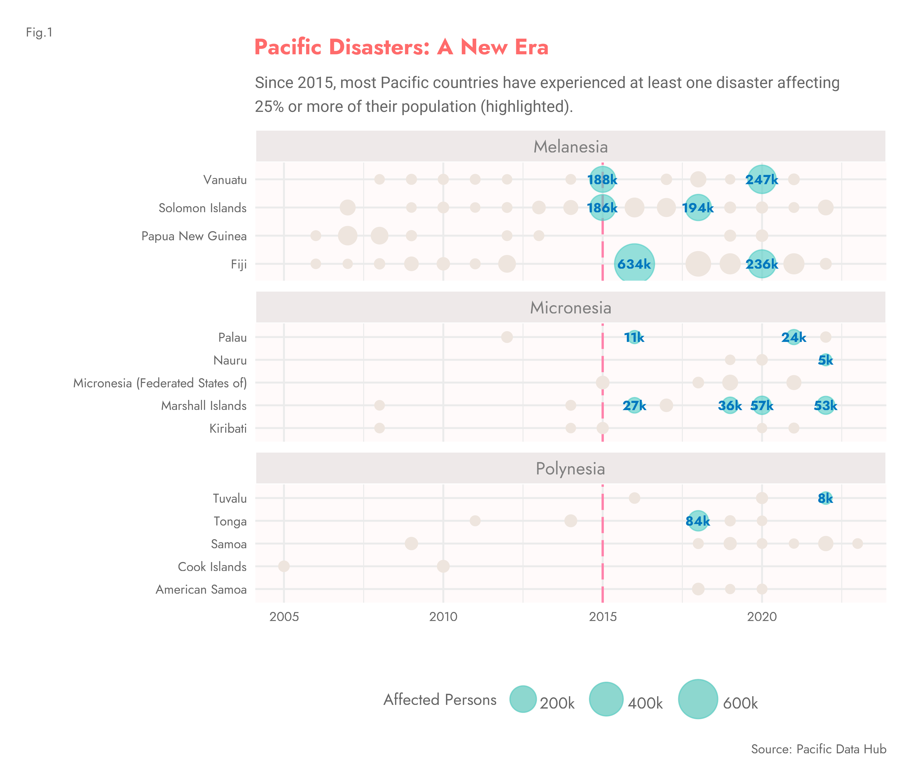
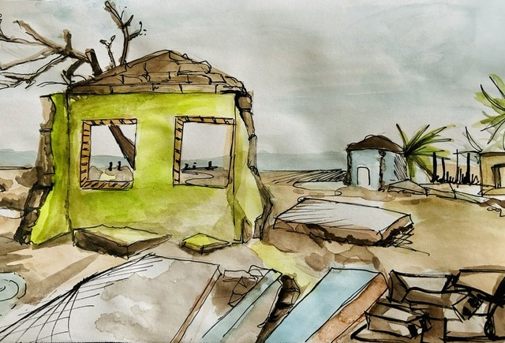
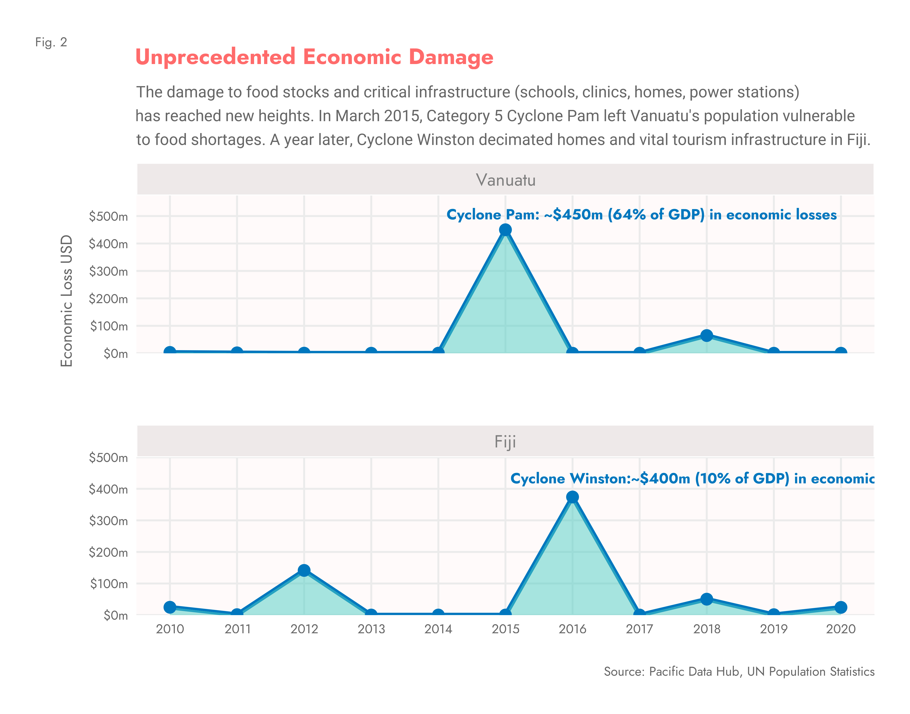
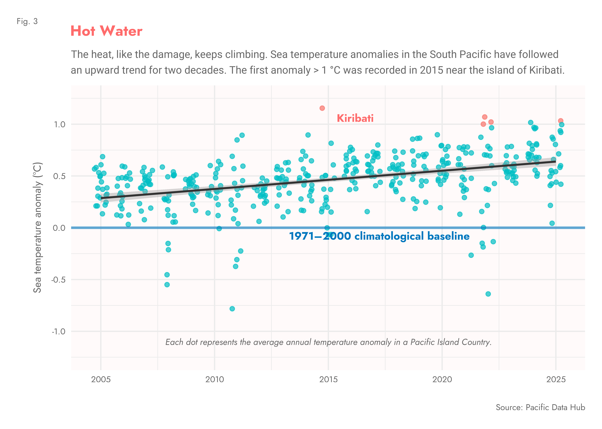

March 13, 2015 — Port Vila
The Night Pam Struck
On March 13th 2015, an ominous sensation swept over the shores of Port Vila. Hotels, schools and roads were deserted. More than 2,000 people were sheltering in evacuation centres. Not far off, disaster loomed on the horizon.
That evening, just before midnight, Pam, a category five cyclone, struck Vanuatu’s capital with extremely destructive force. Winds reaching 250 km/h ripped metal roofs from houses and schools; communications and power infrastructure were destroyed or heavily damaged; crops were wiped out and food stocks blown into debris.
The devastation was unprecedented, affecting 188,000 people — over half the population — with up to 90% of buildings damaged or destroyed. Total estimated economic losses reached $449 million, roughly 64% of Vanuatu’s GDP.

What has changed?
A Region on Edge
By and large, the Pacific region is one of the most vulnerable in the world. Perennial friction between the Australian and Pacific tectonic plates triggers earthquakes and volcanic activity, sometimes resulting in massive tsunamis. Shifts in ocean currents and weather patterns such as El Niño generate cyclones and droughts. For people living in this vast region, such natural disasters are nothing new.
Statistics from the Pacific Data Hub show that, during the last decade, disasters affecting large proportions of the population across Melanesia and Micronesia have become more frequent. Tuvalu and Tonga in Polynesia reflect this new pattern too. The arrival of Cyclone Pam in 2015 seemed to mark the beginning of a new era of more frequent and devastating disasters — a growing challenge as regional economies struggle to recover.
Direct economic loss, USD
The Economic Impact of the Storms
Only a year after Pam’s tragic appearance, Winston emerged — back then, the fiercest tropical storm ever recorded in the Southern Hemisphere. Its trajectory was unusual; it followed a big counter-clockwise loop to the east of Fiji, accumulating strength before striking Viti Levu, Fiji’s largest island. The human and economic toll were catastrophic: more than half a million people were affected and economic losses reached 10% of GDP.

El Niño meets a warming planet
Hot Water
According to experts, “exceptionally warm” ocean temperatures above average, driven by El Niño and climate change, allowed Winston to intensify quickly and maintain its Category 5-level strength.
People in the Pacific are familiar with El Niño — a recurring climate pattern driven by shifts in the winds above the eastern Pacific. It delivers heavy rains in some places, droughts and heatwaves in others, and its strength is measured by how much sea temperatures rise above average. The 2015–2016 edition was exceptional; it nurtured strong tropical storms such as Winston.
However, the data reveals another important milestone reached in 2015: for years, sea temperatures in the South Pacific had been rising steadily, but that year, near the island of Kiribati, the first temperature anomaly above 1°C was recorded. Since then, four more anomalies have hit that threshold.
The heat, like the damage, keeps climbing. The first anomaly > 1°C was recorded in 2015 near Kiribati.

Although climate change and El Niño are not associated with each other, they amplify each other’s effects. The upshot for people living in the South Pacific is warmer sea temperatures and a greater risk of cyclones like Pam and Winston — high-impact disasters that can upend the lives of so many people and bring unprecedented damage to the economies that sustain them.
Paper trail
Sources & References
ASource Data
- Pacific Data Hub — Number of directly affected persons attributed to disasters
- Pacific Data Hub — Direct disaster economic loss, average annual loss
- Pacific Data Hub — Climate Change Indicators: Sea Surface Temperature anomalies (°C)
- United Nations Population Statistics
BReferences
- Asian Development Bank. 01 May 2019. The Pacific Islands: Building Resilience to Natural Disasters.
- Humanitarian Action. November 2022. Pacific Islands.
- Australia Government, DFAT Crisis Hub. Tropical Cyclone Harold.
- The Guardian. 09 Apr 2020. It’s All Gone: Cyclone Harold cuts a deadly path through Vanuatu.
- Climate Signals. Tropical Cyclone Winston.
- Relief Web. 04 April 2015. End of Mission Report: UNDAC Tropical Cyclone Pam, Vanuatu.